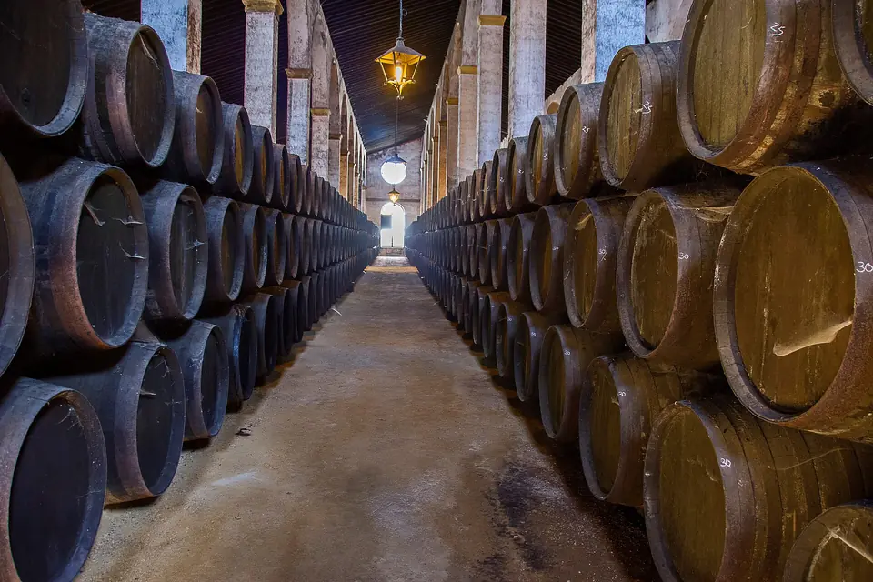

Visita y fino

La visita de siempre. Entramos en la nave, explicamos la solera fila por fila delante de las botas, miramos la flor por el fondo de cristal de una bota de muestra y terminamos con una copa de fino recién venenciada.
- Cuándo
- Martes a sábado, 12:00
- Duración
- 1 h 15 min
- Precio
- 18 €
- Plazas
- Hasta 12
- Idiomas
- Español e inglés
- Incluye
- Recorrido por la nave y una copa de fino sacada con venencia.